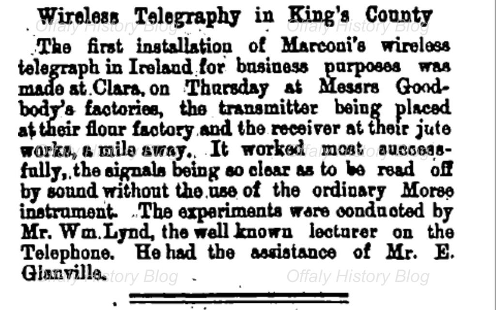

Clara Heritage Society
News Page
This website uses the Dark mode or Light mode option

Dark Mode is OFF
Clara’s contribution to the Birth of the Radio
B.B.C.'s centenary celebrations and John Bowman's recent feature on RTÉ Sunday morning broadcast which included a recording of my late father, Llewellyn Marcus Goodbody, bring to mind the important part that Clara played in the development of radio, the scientific discovery which transformed communications and is now part of everyday life. Without the backing of Irish capital it is possible that Guglielmo Marconi's invention would never have got off the ground.... 
The story begins with the twenty year-old Marconi, who studied Hertzian electro-magnetic waves in the physics laboratory at Bologna University and then started to experiment at home on his father's Italian estate. His father thought that he was wasting his time but, encouraged by his Irish mother, Annie, one of the Jameson whiskey family from Wexford - he persevered with his experiments and succeeded in transmitting signals over increasing distances, which also included intervening hills.
DIGGING THE SPUDS.

In rural Ireland in the 'Rock Salt', sans-serifgone by, one of the last jobs done on the farm for the year, was the digging of the potatoes before winter arrived. At the time farmers grew quite an amount of tillage to cover their requirements for the winter, and no dinner table was complete without potatoes in our young days. How 'Rock Salt', sans-serifhave changed. Potatoes were also used for feeding poultry, and pigs and the surplus was sold to a potato merchant. On the morning of the digging the neighbours would gather to pick the potatoes, which were put in pits covered by rushes and clay to protect from frost or in some cases brought to the barn. In the following few verses I will try to give a glimpse of the way things went on the day.

We arrived in the field at a quarter to ten, Where another days work, was about to begin. The morning was chilly, and frosty and grey, Its perfect said John, For the digging today. Clap your two hands together as kids we were told, For our fingers were tingling, and numb with the cold. Then the old thirty five, in the field did arrive, With the digger, all ready to go. And did quickly begin, the first drill to spin, As the spuds were thrown out in a row. On the lovely dry clay, the potatoes now lay, And the picking did quickly begin. As we cleared off the ground, we could Now hear the sound. Of the tractor, returning again. The next drill to spin, and we picked it again. Of our backs we began to complain, Thank god, said auld John, As the morning went on. For the lovely dry day without rain. When the whistle it blew, twas a sound that we knew. A break for the dinner was taken. And the workers delight, was that wonderful Sight.

A fine dinner of cabbage and bacon. A big mug of tay, we were then on our way, To the field of potatoes once more, And the evening was spent, with our Poor auld backs bent. As each drill was spun out like before. No crops in fields now, well not much anyhow, Except the big growers today. And the gardener's too, have become very few. Just a hobby, to pass time away. Its a novelty now, to grow something somehow, No dependence on this anymore. In the world of today, there's an easier way. All these things can be bought in the store. And the 'Rock Salt', sans-serifof the crop, have now come to a stop. a tradition that just didn't last. Just a memory now, we still carry somehow. Of the happy old days of the past. MARTIN O'HARA © 24/9/2022
Digital Clock
The Time is:
Live Weather
YouTube